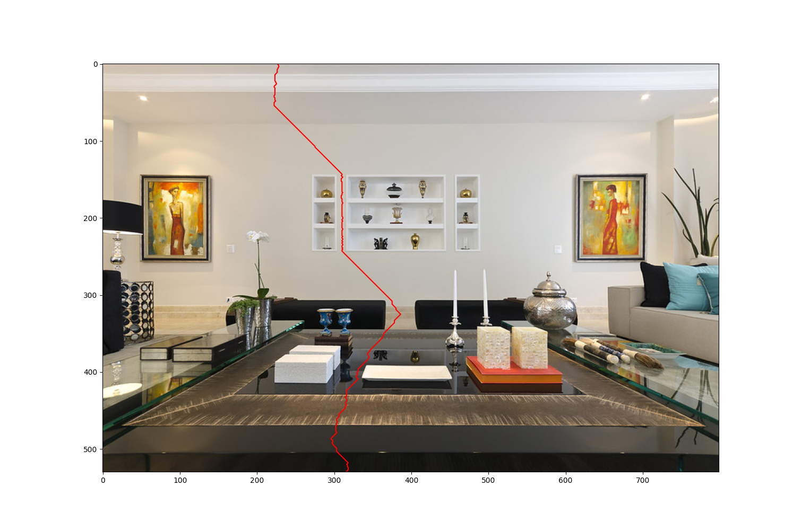
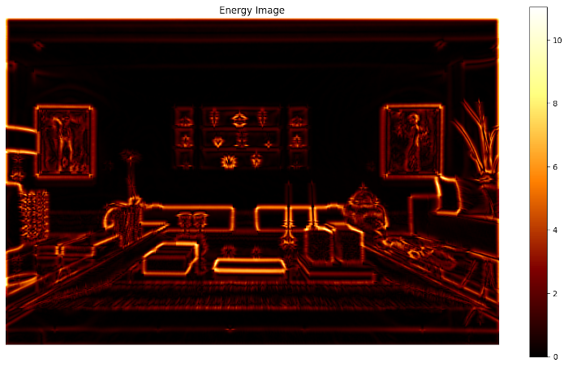

Week 6: Seam Carving
Chris Tralie
Overview / Logistics
Now that we're in the thick of dynamic programming solutions, let's look at an interesting problem in image processing. that benefits from this approach. Let's suppose we have the following 800x530 image of a living room

but we want to make it smaller in width down to 500x530. One thing we could do is uniformly stretch across the x-axis to get the following:
However, this distorts features and throws off the aspect feature all over the image (everything is too thin). Instead, what if we remove some of the whitespace and things we won't notice in the image to preserve some of the foreground objects first. This is the goal of seam carving, and a result could look something like this:
We will now discuss a dynamic programming algorithm to do this, which is described in a paper by Avidan and Shamir back in 2007.
Dynamic Programming Algorithm for Seam Carving
At the core of seam carving is the notion of a seam, which is a connected sequence of pixels from top to bottom (it could also be from left to right, but we will focus on top to bottom without loss of generality). There is one pixel in every row, and from row to row the pixels either move to the left by one column, stay where they are, or move to the right one column. The image below shows an example seam that does a good job avoiding important objects in the picture
To come up with a measure of what a good seam to choose is, we create something that Avidan and Shamir refer to as an energy image. A pixel in an energy image should have a high value if we want to preserve it and a lower value if we are OK to remove it. We then score a seam by summing up all of the values in the energy image that it passes through, and take the one with the lowest score.
One simple energy function that works well is the so-called gradient image. Basically, it's a measure of how strong the edges are in the image. If we are in a region of uniform color, the values will be very small, but if we are at the boundary between objects, the values will be large. This will keep seams away from the boundaries of objects in the image. Below is an example of the gradient image on the living room scene

There are many possible seams in the image. In fact, for an MxN image, there are roughly
\[ N3^{N-1} \]
possible seams. We're going to have to get creative to come up with an efficient algorithm to find the one with minimum cost. For this, we can turn to dynamic programming. What we can do is consider what the minimum cost seam is from the top of the image up to some intermediate pixel. We can fill this information in row by row starting at the second row. Let's suppose we have an MxN 2D array called energy that stores the energy image, and an MxN array called total_energy that stores the minimum cost of a seam from the top up to each pixel. Then we can fill in total_energy with the following dynamic programming algorithm
This algorithm is using the fact that the seam can either move one column to the left, stay in the same place, or move one column to the right between adjacent rows, as shown in the image below
We want to choose the one out of the three that leads to the minimum cost at [i, j]. Furthermore, if we remember which one led to a minimum cost, we can backtrace to find the seam. This information is being stored in a 2D array named choices, where
choices[i][j] = 0means the seam came in from the leftchoices[i][j] = 1means the seam came in from directly abovechoices[i][j] = 2means the seam came in from the right
Coding Task
The dynamic programming algorithm has been provided for you, but you need to fill in the backtracing to find the optimal seam. Click here to download the starter code. You will be filling in the end of the energy_img_seam method. You should trace back from the bottom row by examining what the optimal decision was in the choices array. Keep going until you reach the top row (i = 0), and then you'll be finished.
Examples
Living Room
If you run the following code
You will see the following sequence of seams

Beach Removal
One neat trick that we can play with seam carving is to force the energy image to be zero in some region. This is referred to as a mask. Consider the following example
Image |
Mask |
 |
 |
Then, if we run the following code
We get the following sequence of seams

Notice how the seams all go through the mask region. Here's the final result
It's like she was never there! Sort of. We'd still have to get rid of the shadow, but we can do that by removing horizontal seams also.
Going Too Far
This algorithm does not work equally well on everything, but it can lead to some interesting "artistic" results. For instance, consider the following code
This leads to the following sequence of seams

With the final result below